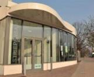
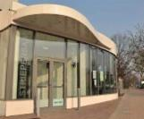

Literaturcafe im Striepensaal
Immer am ersten Sonntag im Monat
liest Dieter Wehrbrink aus Werken der Literatur
von 16 bis ca. 18 Uhr
im Striepensaal
Striepenweg 40
21147 Hamburg
(S3, Haltestelle "Neuwiedenthal", Ausgang Nord)
Die Themen werden in der Presse und auf unserer Homepage bekannt gegeben.
hamburg1: TV-Sendung am 03. Mai 16 "Literaturcafe im Striepensaal" (Min. 8.38)
liest Dieter Wehrbrink gemeinsam mit Gunter Miedeck
aus dem Buch von
Elizabeth George
Vergiss nie, dass ich dich liebe

Herzlich willkommen, der Eintritt ist frei!
Kontakt: Dieter Wehrbrink, Telefon 040 702 55 06
oder Kulturhaus Süderelbe, Telefon 040 796 72 22
 
Quelle: Programmflyer 2013 Striepensaal